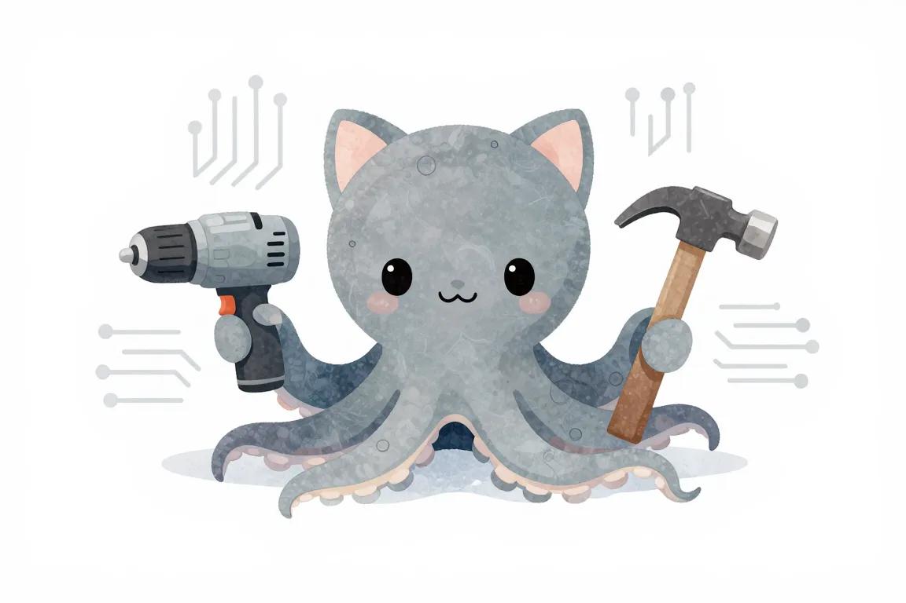
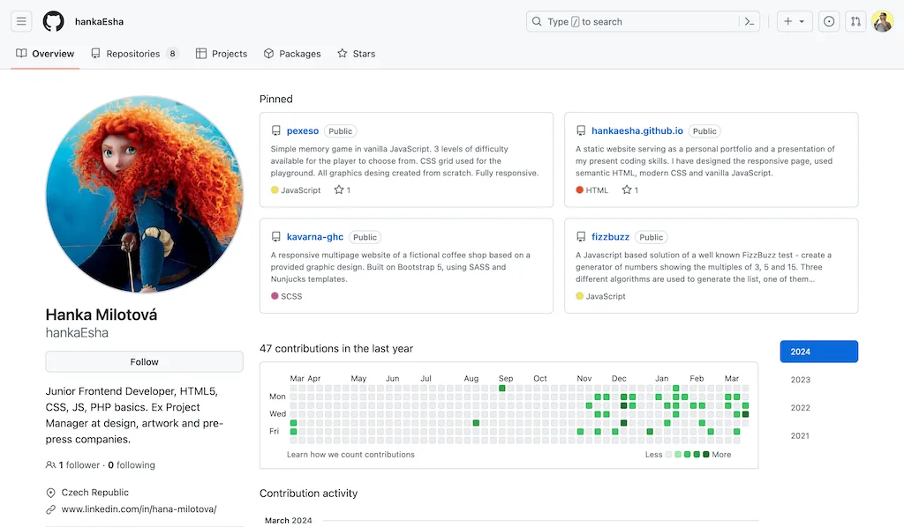
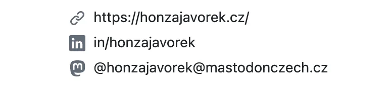
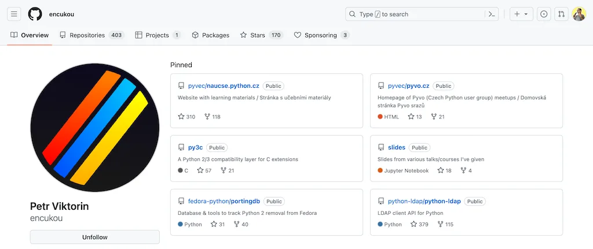
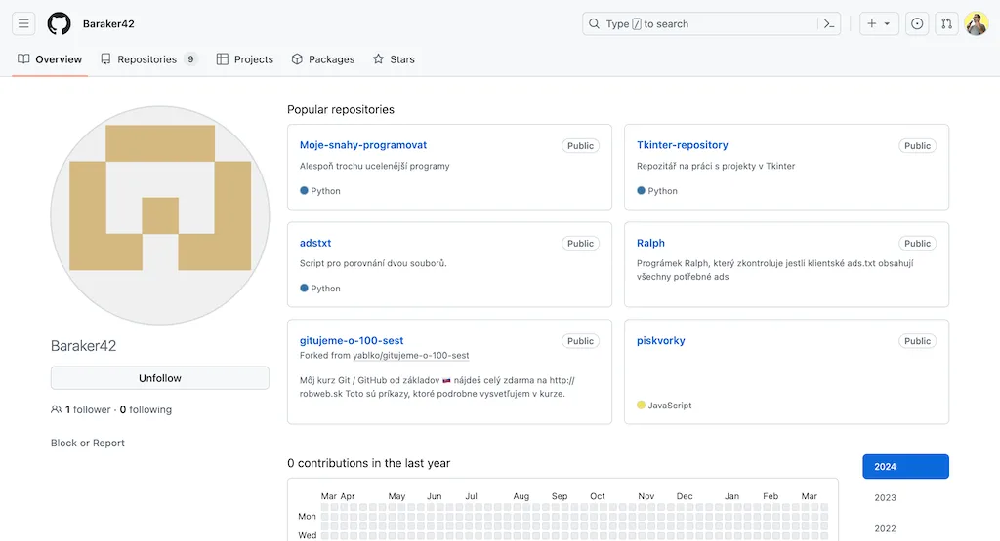
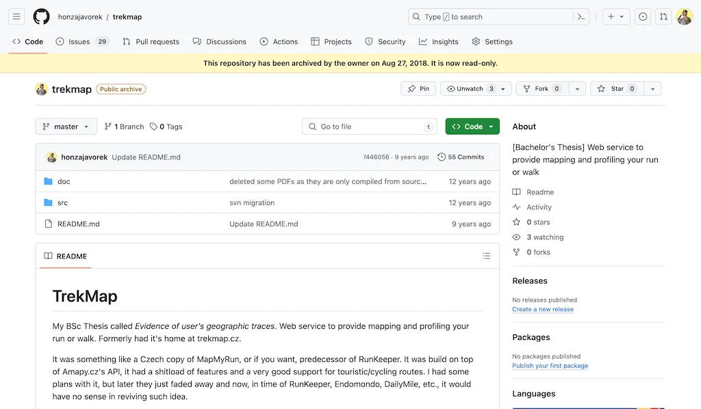
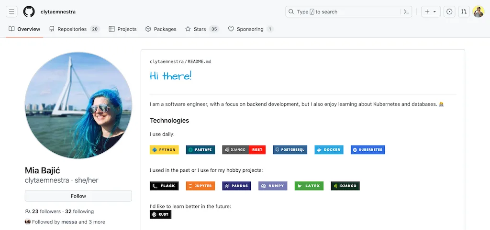
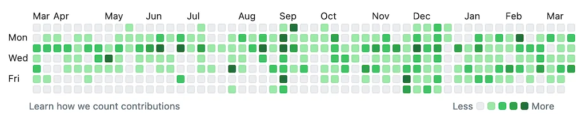

GitHub profil#
Co je GitHub profil a proč ho mít? Má být spíš naleštěnou vitrínkou, nebo zaneřáděnou policí v dílně? Jak jej připravit na pohovory? Kdo se na tvůj GitHub bude dívat a proč? Co je opravdu důležité tam mít a co jsou jen bonusy navíc?

GitHub profil? Cože?#
Pokud něco děláš na GitHubu, tak máš GitHub profil. Ať už proto, že si tam přes Git odkládáš svoje projekty, nebo proto, že se zapojuješ na projektech někoho jiného.
Spousta programátorů ale profil na GitHubu vůbec nemá a nic na GitHubu nedělá. Je to úplně normální. Seniorní profíci běžně nemají veřejně dostupný jediný řádek svého kódu, protože vše, co kdy naprogramovali, bylo interně a za peníze. Svůj předchozí kód často nikomu ani ukázat nesmí, zakazuje jim to smlouva.
Jak je tedy možné, že se často o profilu na GitHubu mluví jako o něčem, co začínající programátor musí mít, nebo co má dokonce posílat spolu se CVčkem? Je to proto, že:
- Junioři nemají žádnou praxi, což kompenzují vytvářením osobních projektů.
- Junioři by měli umět aspoň základy Gitu, protože ten se dnes používá prakticky v každé firmě.
- Je fajn, když se junioři umí pohybovat v nějakém prostředí na sdílení kódu (GitHub, BitBucket, GitLab…), protože každá firma něco takového interně používá.
- Během pohovorů chtějí firmy vidět kód, aby měly představu, co budou muset kandidáty ještě doučit.
U lidí s praxí je GitHub velmi špatné měřítko dovedností. Pokud někdo už pracoval v oboru, nepotřebuje osobní projekty. Že umí s Gitem nebo s něčím, co jim kód zobrazí v prohlížeči, se tak nějak předpokládá.
A jestliže chce firma vidět kód, tak si člověka prozkouší, nebo zadá k vypracování nějaký úkol na doma. Firmám bývá úplně jedno, zda to kandidát odevzdá jako přílohu v e-mailu nebo repozitář na GitHubu.

83% nemá žádné commity za poslední rok, stejně jako 88% nemá žádné sledující. To neznamená, že jsou tito vývojáři špatní, jen to, že nepřispívají do open source a nemají nic veřejného, co by mohli ukázat.
Pro juniory je ale projekt na GitHubu přímočaré řešení všech zmíněných bodů. Stejně musíš něco vytvořit. Když to nahraješ na GitHub, procivčíš si Git a ještě to pak máš veřejně k nakouknutí. To se hodí jak při řešení problémů či mentoringu, tak při odpovídání na inzeráty. A pokud se náhodou přimotáš k open source, konkrétně bez GitHubu se neobejdeš.
GitHub jako polička v dílně#
Repozitáře na GitHubu jsou jako poličky ve tvé dílně. Čím víc toho kutíš, tím víc jich je, a tím větší je v nich nepořádek. Je to tvoje místo a tvoje království. Pokud někomu zrovna nekradeš práci a nevydáváš ji za svoji, nikdo by ti neměl kecat do toho, co si tam dáš, nebo nedáš.

Na GitHubu mám zdrojáky svého osobního webu, svatebního webu, přepis nějaké přednášky, pokusy řešení Advent of Code, nebo strašně starý kód a text bakalářky. A taky stovky kopií různých repozitářů jiných lidí, do kterých jsem nějak přispěl, klidně i přidáním jednoho písmenka.
A především, nemusí to být dokončené, ani nijak uhlazené. Samozřejmě dodržuj nějaké základní zásady. Například si dej pozor, ať v repozitářích nemáš citlivé údaje jako hesla, tokeny, apod.
Jinak ale nemáš co skrývat. Jsi junior a nic co vytvoříš, nebude světoborné. A lidi v oboru to vědí a chápou. Nehledají ve tvém kódu dokonalost, ale informaci o tom, co tě potřebují doučit.
Každý, kdo někdy něco programoval, zná ten pocit, kdy vidí dva týdny starý kód a už má chuť jej přepsat na „lepší“. Tenhle perfekcionismus ale nikam nevede.
Můžeš se sdílení kódu vyhýbat, ale pouze oddálíš, co stejně přijde. Programování je o spolupráci. V práci tvůj kód stejně všichni uvidí, budou ho číst a ještě dostaneš zpětnou vazbu. Raději si těmi pocity projdi už teď, když zatím o nic nejde.
Přijmi to za své a házej všechno na GitHub, jako vidlema seno. Dílčí cvičení? Šup tam s nimi. Nejrůznější nedodělané pokusy? Taky! Jak už bylo zmíněno, aspoň můžeš snadno někomu svůj kód poslat, když se zasekneš a budeš potřebovat pomoc, nebo když budeš chtít zpětnou vazbu.

Pokud jsi aspoň trochu jako já, možná se vnitřně kroutíš při pomyšlení, že ostatním ukážeš něco nedokonalého. Dobrá zpráva - je to jen osobnostní rys a nemusíš být jeho otrokem po zbytek života. Přečti si něco o seberozvoji, zbav se tohoto krutého pána za kormidlem své životní lodičky, a vrať se k psaní kódu.
GitHub jako vitrínka#
I když je kód na GitHubu veřejný, ve skutečnosti ti tam nikdo na nic nekouká, dokud mu nedáš nějaký hodně dobrý důvod. Tvůj profil je jedním z tisíců a tvůj repozitář je jedním z milionů.
Ve chvíli, kdy na něco dáš odkaz do CV a to pošleš firmám, dáváš někomu docela dobrý důvod, aby na to aspoň kliknul a z tvých osobních poliček se najednou stávají veřejné vitrínky. Někdo proto nerad na GitHub dává věci, které nejsou reprezentativní. Bojí se, že mu to zhorší pozici při hledání práce.

Pokud jsi jako většina vývojářů, máš na GitHubu nedokončené tutoriály, kopie cizích projektů, z poloviny hotové projekty a možná JEDEN nebo DVA dobré projekty. Pokud do firmy pošleš CELÝ svůj profil, aby si ho proletěli, jaká je šance, že si všimnou tvého NEJLEPŠÍHO projektu?
Jak jsme si ale už řekli, ve firmách ve skutečnosti samotný GitHub nikoho nezajímá. Pokud budeš mít štěstí, budou je zajímat tvoje projekty a tvůj kód. Takže posílej odkazy přímo na jednotlivé repozitáře, ne na celý profil, kde musí druhá strana ty repozitáře hledat, zatímco zakopává o tvůj nepořádek.
- Ve tvém CV by měla být sekce, kde jsou projekty vypsány jednotlivě.
- Na LinkedIn profilu lze projekty jednotlivě přidat jako featured nebo projects.
Když se někam hlásíš, projdeš pod rukama nejdřív náborářům, a potom programátorům, do jejichž týmu se hledá posila. Náboráři kódu nerozumí, takže si nic na GitHubu nečtou. Programátoři chtějí vidět, co umíš, takže jim uděláš největší službu, když od tebe dostanou odkazy přímo na konkrétní projekty, kterými se chceš chlubit.

Pokud chcete opravdu ukázat své schopnosti, věnujte čas tomu dotáhnout do konce pár projektů, vyšperkovat README a dát potom odkaz už přímo na tyto repozitáře, ideálně s motivací k projektu a vysvětlením, co jste se na něm naučili.
Lidi jsou přirozeně zvědaví a z těch repozitářů se na tvůj profil dostanou. Takže počítej s tím, že se na něj mohou v rychlosti mrknout. Vypíchni reprezentativní věci, upozaď staré a nedokončené. Neber ale GitHub profil jako nějakou seriózní alternativu k životopisu nebo LinkedInu.
Nastav si vlastní obrázek#
GitHub všem v základu dá nějakou výchozí profilovku s barevnými čtverečky, které říkají identicon, aby šlo aspoň trochu odlišit účty jeden od druhého. Drobnost, která tě nic nestojí, ale strašně zlepší první dojem z tvého profilu, je vlastní obrázek.
Fakt to nemusí být fotka, stačí si v nastavení nahrát jakýkoliv avatar, který tě jednoznačně odliší. Působí to líp. Je to zapamatovatelné a vysílá to signál, že GitHub aspoň trochu používáš. Velké množství juniorů na vlastní obrázek kašle, takže i když je to dvouminutová záležitost, vážně tím vynikneš.

Vyplň si základní údaje#
Doplň si v nastavení svoje jméno. Pokud chceš, uveď Bio, tzn. nějakou větu o sobě.
Můžeš vyplnit Location, ale není to nutné a klidně napiš jen „Czechia“, stačí to. GitHub je globální, takže jestli tam chceš dát město, doplň i stát, třeba „Prešov, Slovakia“.
Stejně tak se může hodit vyplnit Pronouns, zvlášť pokud máš obrázek místo fotky. Ani křestní jméno totiž nemusí být jednoznačné, např. Robin se v zahraničí používá pro kluky i holky, Honza nikdo nezná, apod.
Zviditelni své další profily#
Pokud máš nějaký svůj webík s portfoliem nebo blogem, v nastavení je na to políčko Website. Do Social accounts určitě vlož odkaz na svůj LinkedIn. GitHub to rozezná a umí to pak na profilu zobrazit s příslušnou ikonkou.
Pokud si „pěstuješ“ nějaký další profil, třeba jako Petr Valenta na Instagramu, klidně si to tam taky hoď.
Musí to být celý odkaz i s https:// na začátku.

Vypíchni to, čím se chlubíš#
GitHub umožňuje připíchnout si na profil až šest repozitářů. Pro tebe je to jedna z nejdůležitějších funkcí, díky které můžeš dát náhodnému návštěvníkovi jasně najevo, kterými projekty se chceš chlubit. Pokud to neuděláš, vypíšou se ti na profilu „nějaké” repozitáře v „nějakém“ pořadí.
Musíš docílit toho, aby pro ně bylo JEDNODUCHÉ najít tvoje DOBRÉ věci 💪
Šest špendlíků je víc než dost, víc projektů si od tebe nikdo dobrovolně stejně rozklikávat nebude. Nemusíš to ani celé naplnit, klidně takhle vypíchni jen jeden či dva. Podstatná je kvalita, ne množství.
Pokud chceš ručně změnit pořadí projektů, v pravém horním rohu každého z nich najdeš vytečkovanou úchytku, pomocí které je můžeš přetahovat. To nejzajímavější dej jako první.
Je fajn, že přišpendlit můžeš i repozitáře, které patří někomu jinému. Jestliže například dobrovolně pomůžeš s kódem webovky konference PyCon CZ, můžeš se tím pochlubit i přesto, že repozitář patří pod organizaci Pyvec.

Popiš repozitáře#
Vylaďování toho, jak vypadají a co obsahují samotné repozitáře, je téma na samostatnou kapitolu. Jedna věc ale zásadně ovlivňuje i tvůj profil, a to jsou popisky. Na stránce s repozitářem vždy pomocí ozubeného kolečka doplň jednu větu do About, která popisuje jeho účel.
Ideální je mít popsané všechny své projekty, ale u přišpendlených je to nejdůležitější. Popisky se totiž zobrazí na profilu a zlepšují návštěvníkovi orientaci.

Upozaď staré věci a nedodělky#
Repozitáře na GitHubu, které nepovažuješ za reprezentativní, můžeš archivovat. Budou jen pro čtení a žlutý proužek návštěvníkům řekne, že už na nich nepracuješ.
Pokud ti přijde, že to je málo, tak můžeš upravit README projektu a zřetelně v něm zmínit, že se jedná o něco starého, nepoužívaného, archivovaného.
Jestliže ani to nezabrání, aby s tebou cloumaly obavy, že někdo kód z určitého repozitáře uvidí, můžeš ho v nastavení přepnout z veřejného na privátní, a je vymalováno.

Profilové README#
Pokud máš chuť si se svým profilem fakt pohrát, můžeš si udělat tzv. profile README. Je na to návod přímo v dokumentaci, ale možná spíš oceníš inspiraci od konkrétních lidí:
- Supritha Ravish: How to have an awesome GitHub profile?
- Julia Undeutsch: How to create a stunning GitHub Profile
- Simon Willison: Building a self-updating profile README for GitHub
Nicméně ber to spíš jen jako něco pro radost. Můžeš to mít třeba místo svojí osobní webovky. Taková programátorsky na koleně vyrobená, „ručně malovaná“ obdoba Linktree.
I když si to uděláš mega vyladěné, nikdo se podle toho nebude rozhodovat, zda ti nabídne práci. Pokud se ti s tím nechce ztrácet čas, je to úplně v pohodě.

Honba za čtverečky#
GitHub na profilech zobrazuje zelený čtverečkový graf, který ukazuje tvou aktivitu. Někdo to bere jako soutěž, ale soutěž to není. Víc zelených čtverečků reálně o ničem nevypovídá. Navíc jde u tohoto grafu snadno „podvádět“ a dokonce existují sranda nástroje, které ti do něj nakreslí cokoliv chceš.

Zpětná vazba#
Než začneš svůj profil ukazovat ve firmách, nech si na něj dát zpětnou vazbu. Pokud nemáš po ruce nikoho, kdo v tomhle umí chodit, nevadí. Máme bota, který ti vychytá základní věci. Použij formulář nahoře na této stránce, klidně opakovaně! A na co nestačí bot, to můžeš probrat na našem Discordu.


Máš otázky? Chceš probrat svou situaci?
Na junior.guru Discordu si pomáhá 242 lidí, které zajímá svět IT juniorů. Začátečníci, kteří hledají komunitu a podporu. Senioři s chutí sdílet své zkušenosti. K tomu pravidelné online akce a mnoho dalšího.
Konkrétně v kanálech #cv-github-linkedin a #Git - nástroje, postupy, GitHub/Gitlab apod. se v poslední době napsalo 17.855 písmenek měsíčně.